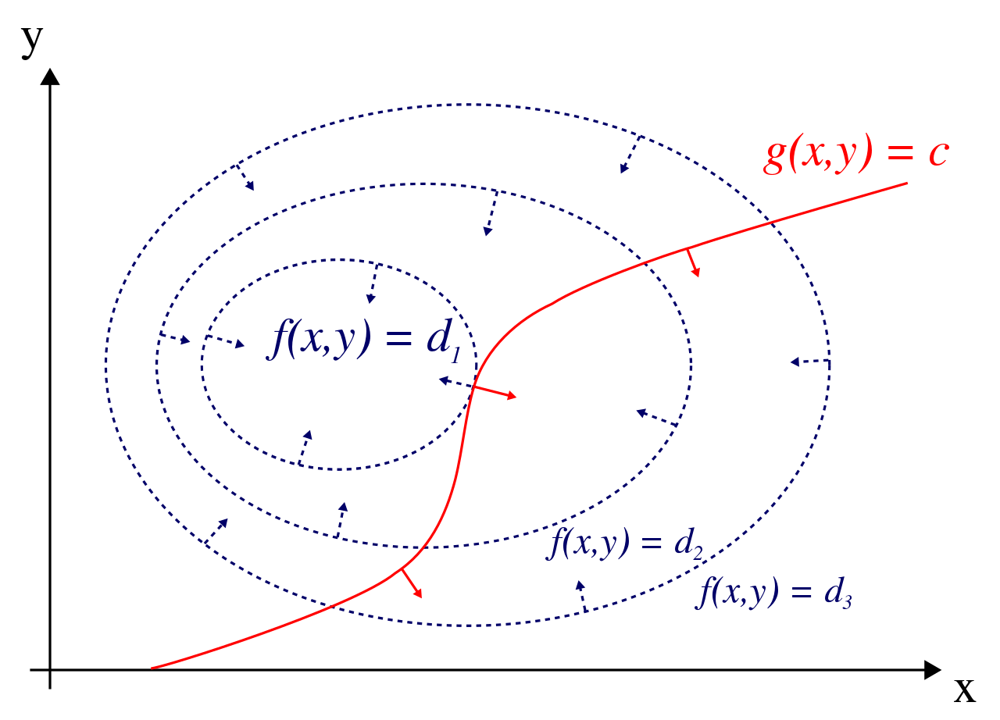

Perturbation Analysis
Computational Economics 2022 (ECO309)
Introduction
- Many models with continuous values/states
- don’t have a closed form solution…
- are subject to the curse of dimensionality…
- and other approximation challenges…
- …unless we can solve them around a steady-state
- Perturbation analysis
- assume a model has a steady-state
- considers small deviations around the steady-state
- relatively easy to implement
- scales well (-> DSGE modelling in Central Banks)
Introduction: Plan
- To compute the perturbed solution, we need:
- a suitable representation of the model
- get rid of \(\max\) operator
- first order conditions
- the steady-state
- the derivatives of the model at the steady-state
- a linear representation
- to solve the linear system
- linear time iteration
- In practice, 2., 3. and 4. are done automatically
First Order Conditions
Two approaches
- First order conditions can be obtained using two approaches
- Using the Bellman representation
- derive first order
- use enveloppe condition \[V(s) = \max_{x} ... + \beta \left[ V(s') \right]\]
- Using the infinite sum representation
- using the lagrangian (today: üòã) \[\max \sum \beta^t U(c_t)\]
- Using the Bellman representation
Lagrangian

- Baby constrained problem: \[\max_{x,y} f(x,y)\] \[g(x,y)-c=0\]
- Lagrangian approach: \[\mathcal{L}(x,y) = f(x,y) + \lambda \left(g(x,y) - c \right)\]
- Optimal solution satisfies: \[\mathcal{L}^{\prime}_x(x,y)=\mathcal{L}^{\prime}_y(x,y)=0\]
- Or \[\begin{bmatrix} f^{\prime}_x\\\\f^{\prime}_y\end{bmatrix} = - \lambda \begin{bmatrix} g^{\prime}_x\\\\g^{\prime}_y\end{bmatrix} \]
Constrained maximization
- Look at the optimization problem: \[\max_{c_1, c_2} \log(c_1) + \beta \log(c_2)\] \[c_1+c_2= C\]
- Write down the lagrangian: \[\mathcal{L}(c_1, c_2) = \log(c_1) + \beta \log(c_2) - \lambda (c_1 + c_2 - C)\]
- First order conditions: \[ \frac{1}{c_1} = \beta \frac{1}{c_2} = \lambda\]
Constrained maximization (infinite horizon)
- Look at the infinite horizon optimization problem: \[\max_{c_0, ,... c_t, ...} \sum_{t=0}^{\infty} \beta^t \log(c_t)\] \[\sum_{t=0}^{\infty} c_t = C\]
- This problem is known as a cake-eating problem (usually there is also \(c_t\geq0\))
- Write the lagrangian to the infinite (and beyond ??) \[\mathcal{L}(c_0, c_1, ..., c_t, ...) = \sum_{t=0}^{\infty} \beta^t \log(c_t) - \lambda \left( \sum_t c_t - C \right)\]
- First order conditions: \[ \beta^t \frac{1}{c_t} = \lambda\]
Constrained maximization (infinite horizon)
- The key consists in finding which terms to derive in the sum
- Consider the reformulation of the former problem: \[\max \sum_{t=0}^{\infty} \beta^t \log(c_t)\] \[\forall t, \\; C_{t+1} = C_t - c_t\]
- This time the maximum is taken over \(c_0, c_1, ...\), \(C_1, C_2, ...\)
- pay attention to the timing: \(C_0\) is predetermined
- Set a different lagrange multplier \(\lambda_t\) for each date. You should get: \[\forall t, \\; \beta^t U^{\prime}(c_t) = \lambda_t\] \[\lambda_t = \lambda_{t+1}\]
- It can be reformulated as \(U^{\prime}(c_t) = \beta U^{\prime}(c_{t+1})\) (Euler equation)
- Note that we are missing one condition to close the model (for instance \(C_t\geq 0\))
Constrained maximization
- The approach outlined, works in the same way when there are several constraints.
- Next steps:
- stochastic problem \[\max \mathbb{E} \left[\sum_t\beta^t U(c_t) \right]\]
- ineqality constraints
- not very different but multipliers can be 0 (binding) or positive (nonbinding)
- theory due to Karush-Kuhn-Tucker rather than Lagrange
Deterministic Neoclassical Growth Model
Transition Equation \[\begin{eqnarray} k_t & = & (1-\delta) k_{t-1} + i_{t-1} \\\\ z_t & = & \rho z_{t-1} \end{eqnarray} \]
Budget constraint: \[c_t = \exp(z_t) k_t^\alpha - i_t\]
Control \(c_t \in [0, \exp(z_t) k_t^{\alpha}]\)
Objective (satisfying the constraints) \[\max_{i_t} \sum_{t\geq0} \beta^t U(c_t)\]
- Calibration:
- \(\beta = 0.96\)
- \(\delta = 0.1\)
- \(\gamma = 4.0\)
- \(\alpha = 0.3\)
- \(U(x)=\frac{x^{1-\gamma}}{1-\gamma}\)
- Remark: optimally agent will never choose \(c_t=0\) or \(c_t= \exp(z_t) k_t^{\alpha}\)
- we ignore associated inequality constraints
Lagrangian
- Initial Conditions (predetermined states): \(z_0\), \(k_0\)
- Problem: \[V(z_0, k_0) = \max_{\begin{matrix}i_0, i_1, i_2, \cdots \\\\c_0, c_1, c_2 \cdots \\\\ k_1, k_2, \cdots\end{matrix}} \sum_{t \geq 0}\beta^t U(c_t)\] s.t. \(\forall t\geq 0\) \[\begin{eqnarray} \lambda_t:\quad & i_t & = & \exp(z_t) k_t^{\alpha} - c_t\\\\ q_t:\quad & k_{t+1} & = & (1-\delta) k_{t} + i_{t} \end{eqnarray}\]
- Lagrangian: \[\mathcal{L(z_0, k_0)} = \sum_{t \geq 0} \beta^t\left\\{ U(c_t) + \lambda_t \left(\exp(z_t) k_t^{\alpha} - i_t -c_t \right) + q_t \left( (1-\delta) k_{t} + i_{t} - k_{t+1} \right) \right\\}\]
Lagrangian
- We maximize the lagrangian to get:
\[\begin{eqnarray} \forall t\geq0 & \frac{\partial \mathcal{L}}{\partial i_t} & = & 0 \\\\ & \frac{\partial \mathcal{L}}{\partial c_t} & = & 0 \\\\ & \frac{\partial \mathcal{L}}{\partial k_{t+1}} & = & 0 \end{eqnarray}\]
- It is important to note that we don’t differentiate with respect to a predetermined state
- check that you don’t differentiate w.r.t. \(k_0\)
- It looks like the first order condition added two new variables \(\lambda_t\), \(q_t\)
- Luckily these variables are associated to constraints. | | | —————————————- | | \((1-\delta) k_{t} + i_{t} - k_{t+1} = 0\) | | \(\exp(z_t) k_t^{\alpha} - i_t -c_t = 0\) |
- which make the problem square again
First order model
- Optimality Condition: \[\beta \left[ \frac{\left(c_{t+1}\right)^{-\gamma}}{\left(c_t\right)^{-\gamma}} \left( (1-\delta + \alpha \exp(z_{t+1}) k_{t+1}^{\alpha -1}) \right)\right] = 1\]
- Takes into account the fact that optimally \(c_t>0\) and \(i_t>0\).
- Budget Constraint: \[c_t = exp(z_t) k_t^\alpha - i_t\]
- Transition: \[k_t = (1-\delta) k_{t-1} + i_{t-1}\] \[z_t = \rho z_{t-1}\]
Steady-State
- Steady-State: \(\overline{i}, \overline{k}, \overline{z}\) such that:
- \(z_{t+1}=k_t=\overline{z}\)
- \(k_{t+1}=k_t=\overline{k}\)
- \(i_{t+1}=i_t=\overline{i}\)
- …satisfy the first order conditions
- …i.e. \[\beta \left( (1-\delta + \alpha {\overline{k}}^{\alpha -1}) \right) = 1\] \[\overline{k}= (1-\delta) \overline{k} + \overline{i}\] \[\overline{z} = \rho \overline{z}\]
- Solution?
- closed-form
- numerical
- Here we can get a closed form:
\[\begin{eqnarray} \overline{k} & = & \left( \frac{\frac{1}{\beta}-(1-\delta)}{\alpha} \right)^{\frac{1}{\alpha - 1}} \\\\ \overline{i} & = & \delta \overline{k} \\\\\ \overline{z} & = & 0 \end{eqnarray}\]
Perturbation Analysis
General idea
- We know the model at the steady-state
- Linearize it around the steady-state
- Characterize its dynamics for small deviations around the steady-state
1d Example 1
- Take function \(f: \\; \mathbb{R}\rightarrow \mathbb{R}\)
- define model $ t \; x_t = f(x_{t-1})$
- Find steady-state \(\overline{x}\) s.t. \(f(\overline{x})=\overline{x}\)
- Taylor expansion: \[ \overline{x} + (x_{t} - \overline{x}) \approx f(\overline{x}) + f^{\prime}(\overline{x})(x_{t-1}-\overline{x})\]
- First order model: \[ \lambda (x_{t-1} - \overline{x}) = (x_{t}-\overline{x}) \]
- Easy to solve: \[x_t-\overline{x} = \lambda^t (x_0 - \overline{x})\]
1d Example 2
- Take function \(f: \\; \mathbb{R}\rightarrow \mathbb{R}\)
- define model implicitly by \[\forall t \\; f(x_{t-1}, x_{t})=0\]
- Find steady-state \(\overline{x}\) such that: \[f(\overline{x}, \overline{x})=0\]
- Implicit Function Theorem: there is a unique \(\varphi\) such that \[\forall x_t \\; f(x_t, \varphi(x_{t})) = 0\]
- It satisfies \(\varphi(\overline{x})=\overline{x}\) and \(\varphi^{\prime}(\overline{x}) = - \frac{f^{\prime}\_{x_t}(\overline{x}, \overline{x})}{f^{\prime}\_{x_{t-1}}(\overline{x}, \overline{x})}\)
- In practice, we use the undetermined coefficient method
- Approximate model close to \(\overline{x}\) by: \[\underbrace{f^{\prime}\_{x\_{t-1}}}\_{A} (x\_{t-1}-\overline{x}) + \underbrace{f^{\prime}\_{x\_t}}\_{B} (x_{t}-\overline{x}) = 0\]
- Look for \((x_t-\overline{x})=\lambda (x_{t-1}-\overline{x})\) with unknown \(\lambda\).
- \(\lambda\) satisfies \(\lambda = -\frac{A}{B}\)
1d example 3
In general economic models link future and past: \[\forall t \\; f(x_{t-1}, x_t, x_{t+1}) = 0\]
Linearize model: \[A \Delta x_{t-1} + B \Delta x_t + C x_{t+1} \\equiv 0\]
Look for a recursive solution as: \[x_t = \lambda x_{t-1}\]
\(\lambda\) is one of two roots \(\lambda_1, \lambda_2\) of \(A + B X + C X^2\)
There is a unique, stable solution iff \(\lambda_1 \leq 1 < \lambda_2\)
Perturb the neoclassical model
- Write all variables in deviation to the steady-state: \[z_{t}=\overline{z} + \Delta z_t\] \[k_{t}=\overline{k} + \Delta k_t\] \[i_{t}=\overline{i} + \Delta i_t\] \[c_{t}=\overline{c} + \Delta c_t\]
- Remark: some smart economists use log-deviations (i.e. \(x_t = \overline{x} \hat{x}_t\) to make computations easier)
- Replace in the system \[\beta \left[ \frac{\left(\overline{c}+ \Delta c_{t+1}\right)^{-\gamma}}{\left(\overline{c} + \Delta c_t\right)^{-\gamma}} \left( (1-\delta + \alpha (\overline{k} + \Delta k_{t+1})^{\alpha -1}) \right)\right] = 1\] \[\overline{c} + \Delta c_t = (\overline{k}+ \Delta k_t)^\alpha - \overline{i} - \Delta i_t\] \[\overline{k} + \Delta k_t = (1-\delta) (\overline{k}+ \Delta k_{t-1}) + \overline{i }+ \Delta i_{t-1}\] \[\overline{z }+ \Delta z_t = \overline{z}+ \Delta \rho z_{t-1}\]
- Differentiate…
- (if we want to limit the number of equations, we can replace \(c_t\) by its value)
Result:
Optimality Condition \[\begin{bmatrix} . & . & . \\ \end{bmatrix} \begin{bmatrix} \Delta c_t \\\\ \Delta i_t \\\\ \Delta k_t \\\\ \Delta z_t \end{bmatrix} = \begin{bmatrix} . & . & . \\ \end{bmatrix} \begin{bmatrix} \Delta c_{t+t} \\\\ \Delta i_{t+1} \\\\ \Delta k_{t+1} \\\\ \Delta z_{t+1} \end{bmatrix} \]
Transition \[ \begin{bmatrix} \Delta k_t \\\\ \Delta z_t \end{bmatrix} = \begin{bmatrix} . & . \\\\ . & . \end{bmatrix} \begin{bmatrix} \Delta k_{t-1} \\\\ \Delta z_{t-1} \end{bmatrix} + \begin{bmatrix} . \end{bmatrix} \begin{bmatrix}\Delta c_{t-1}\\\\ \Delta i_{t-1}\end{bmatrix}\]
Solution using Linear Time iteration
Our problem
- General formulation of a linearized model: \[ \begin{eqnarray} A s_t + B x_t + C s_{t+1} + D x_{t+1} & = & 0_{n_x} \\\\
s_{t+1} & = & E s_t + F x_t \end{eqnarray}\] where:
- \(s_t \in \mathbb{R}^{n_s}\) is a vector of states
- \(x_t \in \mathbb{R}^{n_x}\) is a vector of controls
- Remark:
- first equation is forward looking
- second equation is backward looking
In the neoclassical model: \[\begin{eqnarray} s_t & = & (\Delta z_t, \Delta k_t) \\\\ x_t & = & (\Delta c_t, \Delta i_t) \end{eqnarray}\]
The linearized system is: \[\begin{eqnarray} A & = & ...\\\\ B & = & ...\\\\ C & = & ...\\\\ D & = & ...\\\\ E & = & ...\\\\ F & = & \end{eqnarray}\]
Solution
What is the solution of our problem?
At date \(t\) controls must be chosen as a function of (predetermined) states
Mathematically speaking, the solution is a function \(\varphi\) such that: \[\forall t, x_t = \varphi(s_t)\]
Since the model is linear we look for un unknown matrix \(X \in \mathbb{R}^{n_x} \times \mathbb{R}^{n_s}\) such that:
\[\Delta x_t = X \Delta s_t\]
In the neoclassical model - The controls \(c_t, i_t\) must be a function of the states - there is a decision rule \(c(), i()\) such that \[c_t=c(z_t, k_t) \\; i_t = i(z_t, k_t)\] - In the linearized model: \[\Delta c_t =c_z \Delta c_t + c_k \Delta k_t\] \[\Delta i_t =i_z \Delta z_t + i_k \Delta k_t\]
- \(k_t\) and \(z_t\): the states
Optimality condition:
Replacing in the system: \[ \begin{eqnarray} \Delta x_t & = & X \Delta s_t \\\\ \Delta s_{t+1} & = & E \Delta s_t + F X \Delta s_t \\\\ \Delta x_{t+1} & = & X \Delta s_{t+1} \\\\ A \Delta s_t + B \Delta x_t + C \Delta s_{t+1} + D \Delta x_{t+1} & = & 0 \end{eqnarray} \]
If we make the full substitution:
\[( (A + B X) + ( D X + C) ( E + F X ) ) s_t = 0\]
- This must be true for all \(s_t\). We get the special Ricatti equation:
\[(A + B \color{red}{X}) + ( D \color{red}{X} + C) ( E + F \color{red}{X} ) = 0 \]
- this is a quadratic, matrix ( \(X\) is 1 by 2 ) equation:
- requires special solution method
- there are multiple solutions: which should we choose?
- today: linear time iteration selects only one solution
- next time: eigenvalues analysis
Linear Time Iteration
- Let’s be more subtle: define
- \(X\): decision rule today and
- \(\tilde{X}\) is decision rule tomorrow. \[\begin{eqnarray} \Delta x_t & =& X \Delta s_t \\\\ \Delta s_{t+1} & = & E \Delta s_t + F X \Delta s_t \\\\ \Delta x_{t+1} & = & \tilde{X} \Delta s_{t+1} \\\\ A \Delta s_t + B \Delta x_t + C \Delta s_{t+1} + D \Delta x_{t+1} & = & 0 \end{eqnarray}\]
- We get, \(\forall s_t\): \[(A + B X) + (C + D \tilde{X}) ( E + F X ) ) \Delta s_t = 0 \]
- Again, this must be zero in all states \(\Delta s_t\).
Linear Time Iteration (2)
- We get the equation: \[F(X, \tilde{X}) = (A + B X) + ( C+ D \tilde{X}) ( E + F X ) = 0 \]
- Consider the linear time iteration algorithm
- When the model is well-specified it is guaranteed to converge to the right solution.
- cf linear time iteration by Pontus Rendahl (link)
- There are simple criteria to check that the solution is right, and that the model is well specified
- \(T\) is the time iteration operator… for linear models
- it does forward iteration (\(X_t\) as a function of \(X_{t+1}\))
- algorithm:
- choose stopping criteria: \(\epsilon_0\) and \(\eta_0\)
- choose random \(X_0\)
- given \(X_n\):
- compute \(X_{n+1}\) such that \(F(X_{n+1}, X_{n}) = 0\) \[(B + (C+D X_{n})F)X_{n+1} + A + (C+D X_n )E=0\]\[X_{n+1} = (B + (C + D X_n) F)^{-1} (A + (C+DX_n)E)\]\[X_{n+1} = T(X_n)\]
- compute:
- \(\eta_n = |X_{n+1} - X_n|\)
- \(\epsilon_n = F(X_{n+1}, X_{n+1})\)
- if \(\eta_n<\eta_0\) and \(\epsilon_n<\epsilon_0\)
- stop and return \(X_{n+1}\)
- otherwise iterate with \(X_{n+1}\)
Simulating the model
- Suppose we have found the solution \(\Delta x_t = X \Delta s_t\)
- Recall the transition equation: \(\Delta s_{t+1} = F \Delta s_t + G \Delta x_t\)
- We can now compute the model evolution following initial deviation in the state: \[\Delta s_t = \underbrace{(F + G X)}\_{P} \Delta s\_{t-1}\]
- \(P\) is the simulation operator
- it does backward iteration (TODO: example of a reaction to a shock)
- The system is stable if the biggest eigenvalue of \(P\) is smaller than one…
- … or if its spectral radius is smaller than 1: \[\rho(P)<1\]
- This condition is called backward stability
- it rules out explosive solutions
- if \(\rho(P)>1\) one can always find \(s_0\) such that the model simulation diverges
Spectral radius
- How do you compute the spectral radius of matrix P?
- naive approach: compute all eigenvalues, check the value of the biggest one…
- better approach: power iteration method
- Power iteration method:
- take a linear operator \(L\) over a Banach Space \(\mathcal{B}\) (vector space with a norm)
- use the fact that for most \(u_0\in \mathcal{B}\), \(\frac{|L^{n+1} u_0|}{|L^n u_0|}\rightarrow \rho(L)\)
- Algorithm:
- choose tolerance criterium: \(\eta>0\)
- choose random initial \(x_0\) and define \(u_0 = \frac{x_0}{|x_0|}\)
- by construction: \(|u_0|=1\)
- given \(u_n\), compute
- \(x_{n+1} = L.u_n\)
- \(u_{n+1} = \frac{x_{n+1}}{|x_{n+1}|}\)
- compute \(\eta_{n+1} = |u_{n+1} - u_n|\)
- if \(\eta_{n+1}<\eta\):
- stop and return \(|x_{n+1}|\)
- else iterate with \(u_{n+1}\)
Stability of the backward operator
- To solve the model we use the backard operator: \[T: \begin{eqnarray} \mathbb{R}^{n_x} \times \mathbb{R}^{n_s} & \rightarrow & \mathbb{R}^{n_x} \times \mathbb{R}^{n_s} \\\\X_{t+1} & \mapsto & X_t \text{s.t.} F(X_t,X_{t+1})=0\end{eqnarray}\]
- What about its stability?
- TODO: interpretation
- Recall: fixed point \(\overline{z}\) of recursive sequence \(z_n=f(z_{n_1})\) is stable if \(|f^{\prime}(\overline{z})|<1\)
- We need to study \(T^{\prime}\) of (\(X\)).
- but \(T\) maps a matrix to another matrix üêâüòì
- how do we differentiate it?
Differentials
- Consider a Banach Space \(\mathcal{B}\).
- Consider an operator (i.e. a function): \(\mathcal{T}: \mathcal{B} \rightarrow \mathcal{B}\).
- Consider \(\overline{x} \in \mathcal{B}\).
- \(\mathcal{T}\) is differentiable at \(\overline{x}\) if there exists a bounded linear operator \(L \in \mathcal{L}(\mathcal{B})\) such that: \[\mathcal{T}(x) = \overline{x} + L.(x-\overline{x}) + o(|x-\overline{x}|)\]
- when it exists we denote this operator by \(\mathcal{T}^{\prime}(\overline{x})\)
- Remarks:
- Bounded operator means: \(\sup_{|x|=1} |L.x|<+\infty\)
- This definition of a derivative is usually referred to as Fréchet-derivative
Examples of linear operators
- \(x\) vector, A a matrix, \(T(x) = Ax\)
- then \(T(x+u) = Ax + A.u + 0\)
- \(T^{\prime}(x) = A\) for all x
- \(A\) a matrix, B a matrix, X a matrix: \(T(X) = A X B\)
- then \(T(X+u) = A X B + A u B + 0\)
- \(T^{\prime}(X).u = A u B\)
- \(A\) a matrix, X a matrix: \(T(X) = A X B\)
- then \(T(X+u) = A X B + A u B\)
- \(T^{\prime}(X).u = A u B\)
Back to the time iteration operator
- \(T(X)\) is implicitly defined by \(F(T(X), X)=0\)
- \(F(X,Y) = (A + B X) + ( C+ D Y) ( E + F X )\)
- it is linear in \(X\) and in \(Y\)
- \(F^{\prime}_X (X, Y).u = (B + (C+DY)F) u\)
- a regular matrix multiplication
- its inverse is: \(F^{\prime}_X (X, Y)^{-1} = (B + (C+DY)F)^{-1}\)
- \(F^{\prime}_Y (X, Y).u = D u (E+FX)\)
- a linear operation on matrices
The derivative of the time-iteration operator
- Implicit relation can be differentiated: \[F^{\prime}_X (T(X), X) T^{\prime} (X) + F_Y^{\prime}(T(X),X) = 0\]
- \(F^{\prime}_X (T(X), X)\) being a regular matrix, it is (conceptually) easy to invert: \[T^{\prime}(X) = -(F^{\prime}_X (T(X), X))^{-1}F_Y^{\prime}(T(X),X)\]
- Finally, we get the explicit formula for the linear operator \(T^{\prime}\) computed at the steady state: \[T^{\prime}(\overline{X}).u = ((B + (C+D \overline{X})F)^{-1})D u (E+F \overline{X})\]
- We can compute the spectral radius of \(T^{\prime}(\overline{X})\) using the power iteration method
Recap
- We compute the derivatives of the model
- Time iteration algorithm, starting from an initial guess \(X_0\) and we repeat until convergence: \[X_{n+1} = (B + (C + D X_n) F)^{-1} (A + (C+DX_n)E)\]
- We compute the spectral radius of two operators to ensure the model is well defined and that the solution is the right one.
- backward stability: derivative of simulation operator \[\rho(E + F \overline{X} )<1\]
- forward stability: derivative of time iteration operator \[\rho \left( u\mapsto ((B + (C+D \overline{X})F)^{-1})D u (E+F \overline{X}) \right) <1\]
This is equivalent to the so-called Blanchard-Kahn conditions.